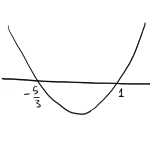
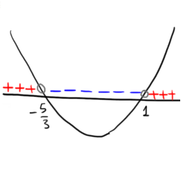

Il nostro obiettivo è scoprire quali valori della \(x\) rendono il polinomio
positivo
nullo
negativo
In altre parole vogliamo studiare il segno del polinomio al variare del valore della \(x\).
Per farlo risolviamo l'equazione associata al polinomio e disegnamo la parabola che lo rappresenta:
\[
\begin{align*}
x = \,& \dfrac{-2 \pm \sqrt{2^2 -4 \cdot 3 \cdot \left(-5\right)}}{2 \cdot 3} =
\\\\
= \,& \dfrac{-2 \pm \sqrt{64}}{6} = \dfrac{-2 \pm 8}{6}
\end{align*}
\]
quindi
\[
\begin{align*}
x = \dfrac{-2 + 8}{6} \quad&\text{oppure}\quad x = \dfrac{-2 - 8}{6}
\\\\
x = 1 \quad&\text{oppure}\quad x = -\dfrac{5}{3}
\end{align*}
\]
di conseguenza la parabola che rappresenta il polinomio è la seguente

A partire da questo grafico è possibile stabilire il segno del polinomio \(3x^2 +2x -5\). Infatti,
i valori della \(x\) in corrispondenza dei quali il grafico si trova sopra
l'asse
delle \(x\) sono quelli per cui il polinomio ha segno \(\boldsymbol{\color{red}{+}}\)
i valori della \(x\) in corrispondenza dei quali il grafico si trova sotto
l'asse
delle \(x\) sono quelli per cui il polinomio ha segno \(\boldsymbol{\color{blue}{-}}\)
i valori della \(x\) in corrispondenza dei quali il grafico interseca l'asse
delle \(x\) sono quelli per cui il polinomio vale \(\boldsymbol{\color{gray}{0}}\)
Rappresentiamo queste informazioni sul grafico della parabola:

Possiamo concludere che
\(3x^2 +2x -5 \lt 0 \quad\)
se \(\,\,\,\,\,x \lt -\dfrac{5}{3}\quad\) oppure \(\quad x \gt 1\)
\(3x^2 +2x -5 = 0 \quad\)
se \(\,\,\,\,\,x = -\dfrac{5}{3}\quad\) oppure \(\quad x = 1\)
\(3x^2 +2x -5 \gt 0 \quad\) se
se \(\,\,\,\,\,\dfrac{5}{3} \lt x \lt 1\)
Esercizio
Studiare il segno del polinomio
\[
-2x^2 - x + 3
\]
al variare del valore della \(x\).
Soluzione
\(-2x^2 - x + 3 \gt 0\)
se \(\quad -\dfrac{3}{2} \lt x \lt 1 \quad\)
\(-2x^2 - x + 3 \lt 0\)
se \(\quad x \lt -\dfrac{3}{2} \quad\) oppure \(x \gt 1\)
\(-2x^2 - x + 3 = 0\)
se \(\quad x = -\dfrac{3}{2} \quad\) oppure \(x = 1\)
Svolgimento
Esercizio
Studiare il segno del polinomio
\[
6x^2 - 13x + 2
\]
al variare del valore della \(x\).
Soluzione
\(6x^2 - 13x + 2 \gt 0\)
se \(\quad x \lt \dfrac{1}{6} \quad\) oppure \(x \gt 2\)
\(6x^2 - 13x + 2 \lt 0\)
se \(\quad \dfrac{1}{6} \lt x \lt 2 \quad\)
\(6x^2 - 13x + 2 = 0\)
se \(\quad x =\dfrac{1}{6} \quad\) oppure \(x = 2\)
Svolgimento
Esercizio
Studiare il segno del polinomio
\[
-x^2 + 5
\]
al variare del valore della \(x\).
Soluzione
\(-x^2 + 5 \gt 0\)
se \(\quad -\sqrt{5} \lt x \lt \sqrt{5} \quad\)
\(-x^2 + 5 \lt 0\)
se \(\quad x \lt -\sqrt{5} \quad\) oppure \(x \gt \sqrt{5}\)
\(-x^2 + 5 = 0\)
se \(\quad x = -\sqrt{5} \quad\) oppure \(x = \sqrt{5}\)
Svolgimento
Esercizio
Studiare il segno del polinomio
\[
2x^2 -x -6
\]
al variare del valore della \(x\).
Soluzione
\(2x^2 -x -6 \gt 0\,\,\) se \(\,\,x \lt -\dfrac{3}{2}\,\,\) oppure \(\,\, x \gt 2\)
\(2x^2 -x -6 \lt 0\,\,\) se \(\,\, -\dfrac{3}{2} \lt x \lt 2\)